空間的工作，是讓花浮起來，而不是讓空間好看。
The space exists to make the flowers float, not to make itself beautiful.
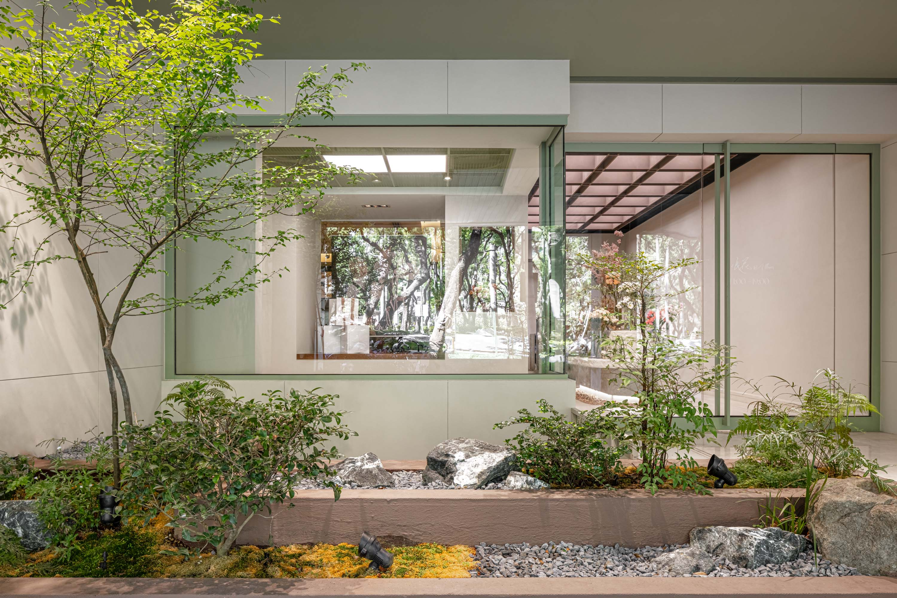
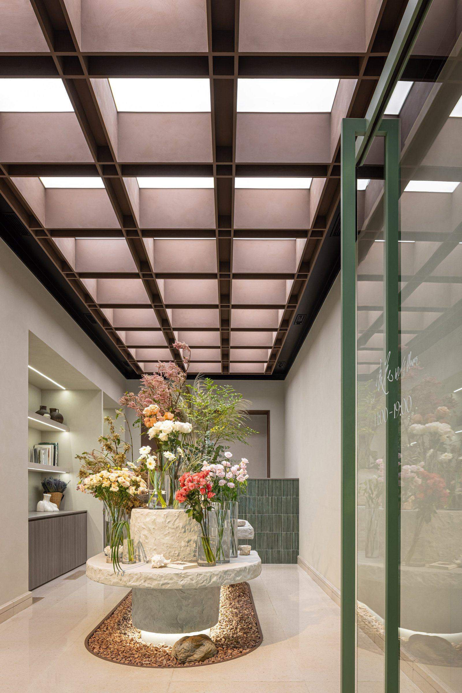
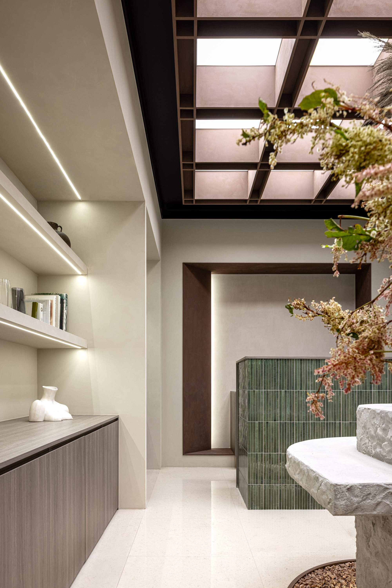
01
花藝品牌最常見的錯誤，是讓空間本身太有設計感，把花搶掉了。浪花的策略是退場。鋼構格柵天花引入漫射光，牆面以白色為底，室外庭院作為第一個視線落點。進入後的核心是一張石頭桌，花在其上。
The most common mistake in floral retail is making the space too designed — stealing the show from the flowers. Wave Flower's strategy is to disappear. A steel-grid ceiling diffuses light; walls stay white; the courtyard anchors the first line of sight. Inside, a stone table holds the arrangement.
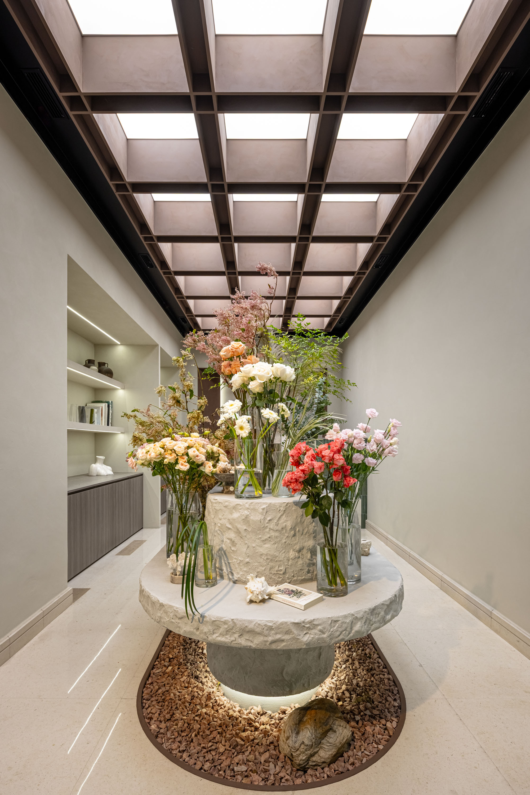
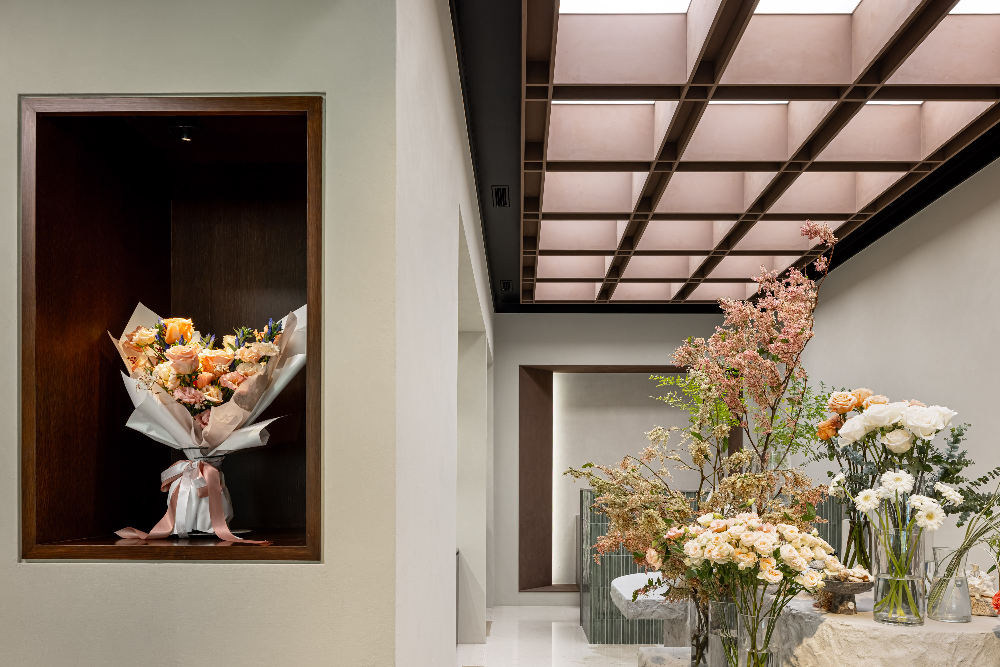
02
鋼構格柵天花的設計，不是工業風的選擇，是光的決定。格柵讓自然光在進入室內之前先被打散，落在地面和牆面的光沒有硬邊，像在植物生長的環境裡。花在這樣的光線下，不是被「打亮」的，是自然存在的。
The steel-grid ceiling is not an industrial-style choice — it is a decision about light. The grid scatters natural light before it enters; what reaches floor and wall has no hard edge, like the environment where plants grow. Under this light, flowers simply exist.
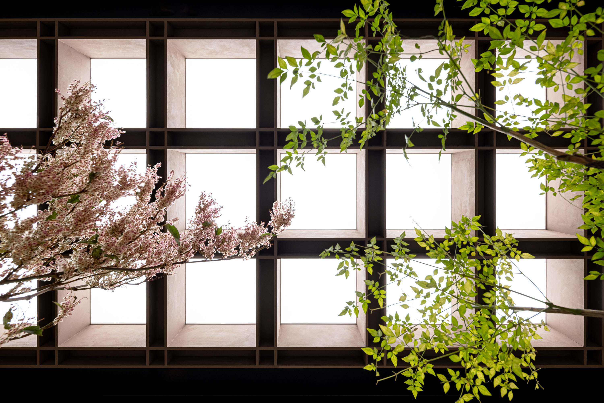
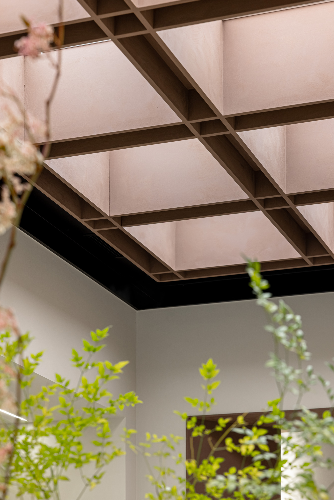
03
室外庭院是空間序列的第一步。在你走進陳列室之前，你先停在外面，視線落在植物上。這個停頓不是等待，是一個讓身體從街道節奏切換到花藝節奏的過渡帶。
The outdoor courtyard is the first step in the spatial sequence. Before entering the showroom, you pause outside, gaze landing on plants. This pause is not waiting — it is a transition zone shifting the body from street rhythm to floral rhythm.
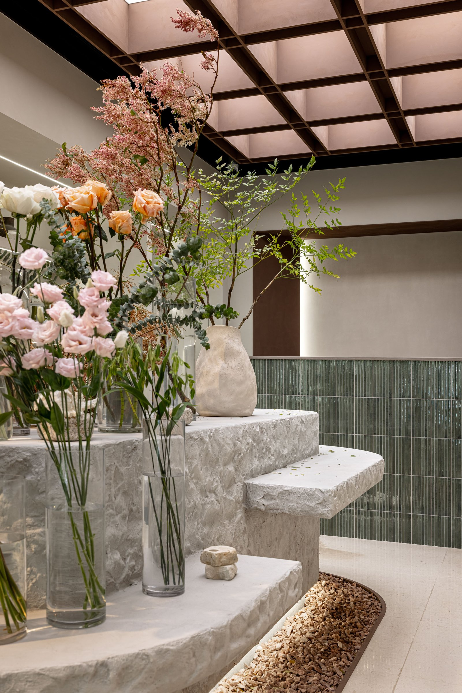
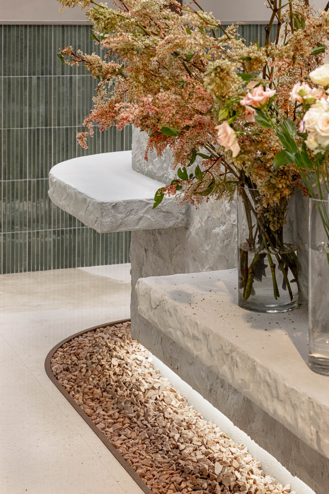
04
石頭桌是整個空間的重心。它的材質有重量感，但表面沒有干擾，花放上去之後，桌子本身就隱退了。這是空間設計最難的一件事：讓一個物件在場，但不搶話。
The stone table is the space's center of gravity. Its material carries weight, but its surface offers no distraction — once flowers are placed, the table recedes. This is the hardest thing in spatial design: making an object present without letting it take over.
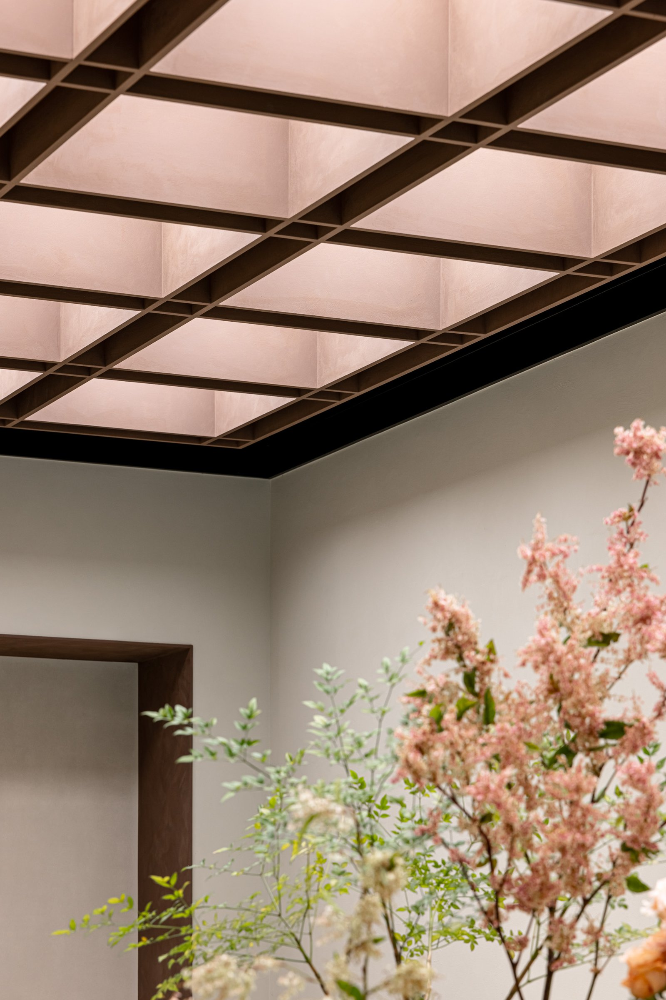
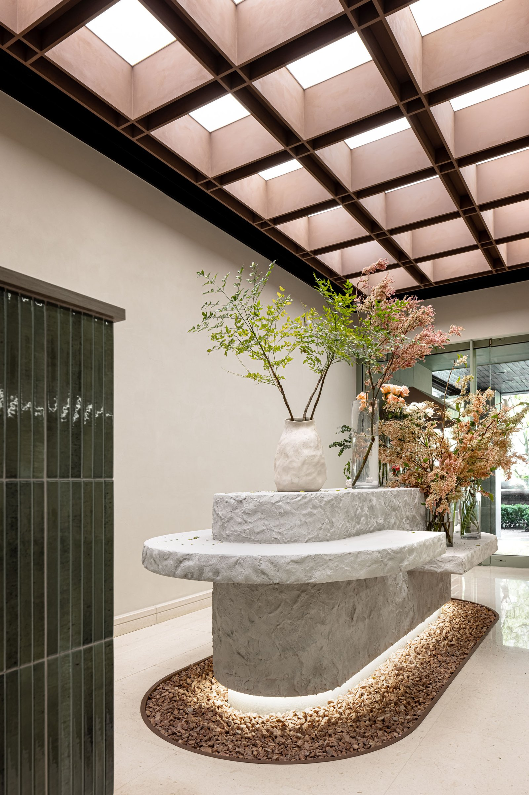
05
花是有時間性的材料——今天和明天看到的不一樣。空間設計必須回應這個特性：不能用固定的展示邏輯去框住一個每天都在變化的主角。石桌、白牆、漫射光——這三個不變的元素，讓花的每一次變化都被好好地承接。
Flowers are a time-based material — today and tomorrow look different. Spatial design must respond to this: a changing protagonist cannot be confined by fixed display logic. Stone table, white wall, diffused light — three constants that properly receive every change the flowers undergo.
All Photos